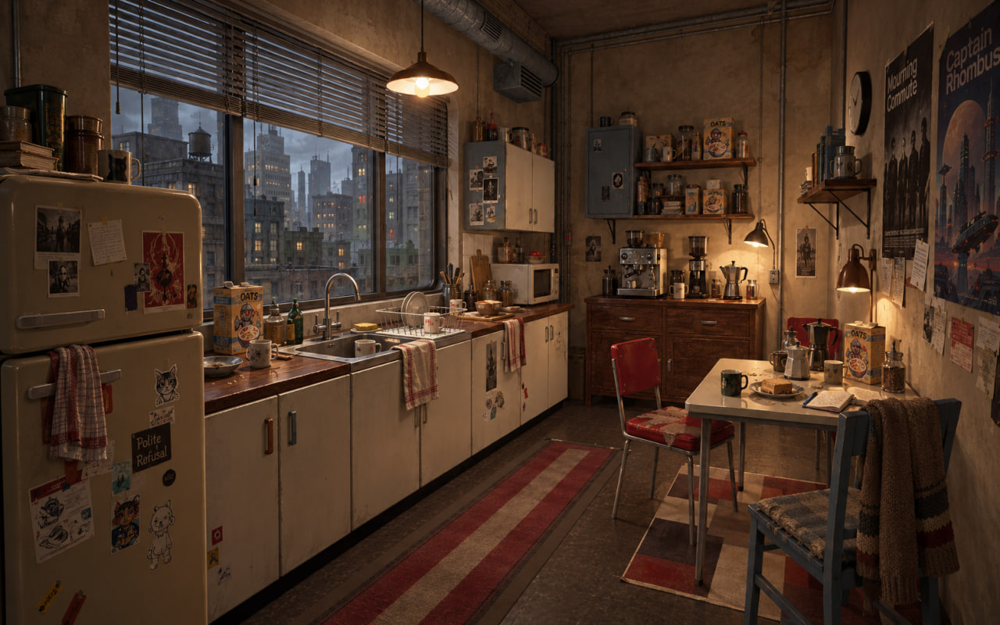
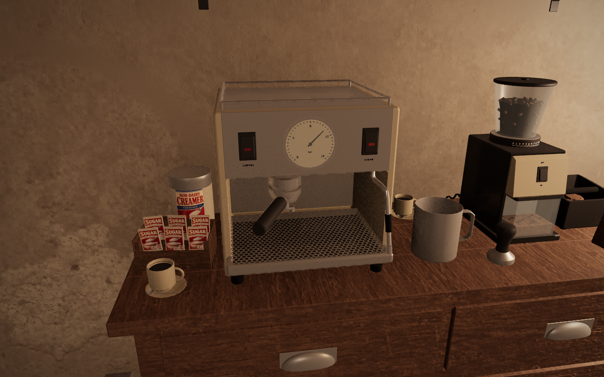
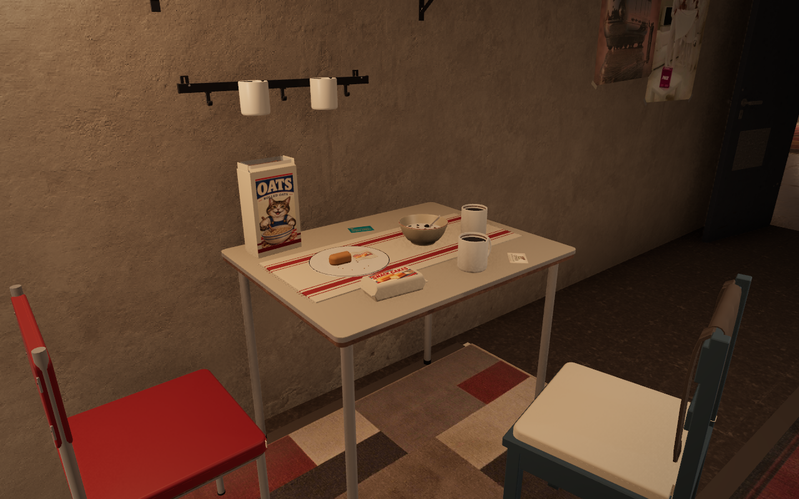
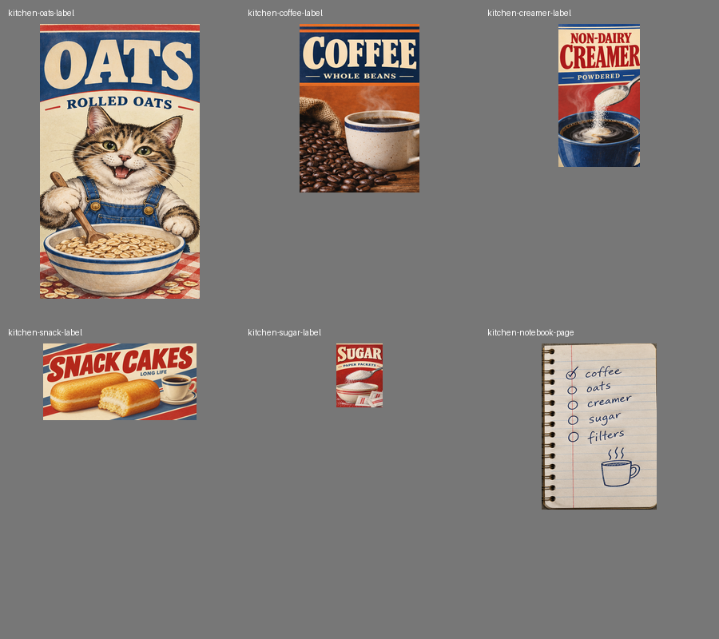
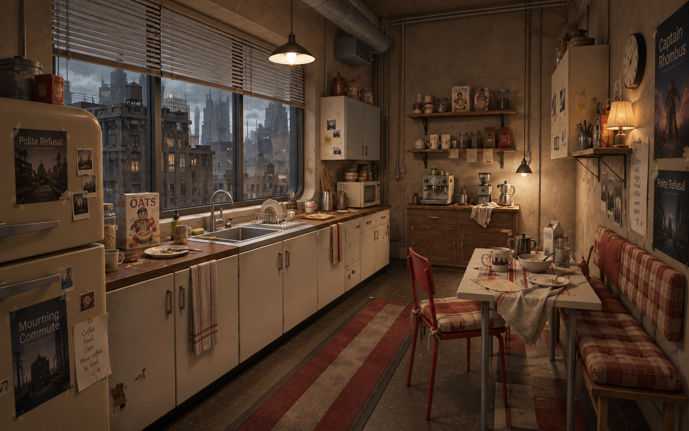
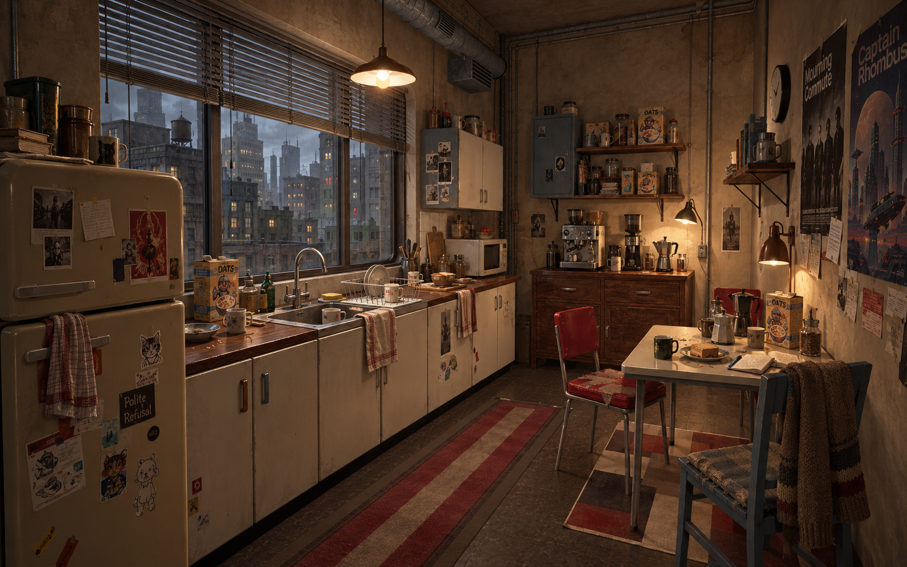
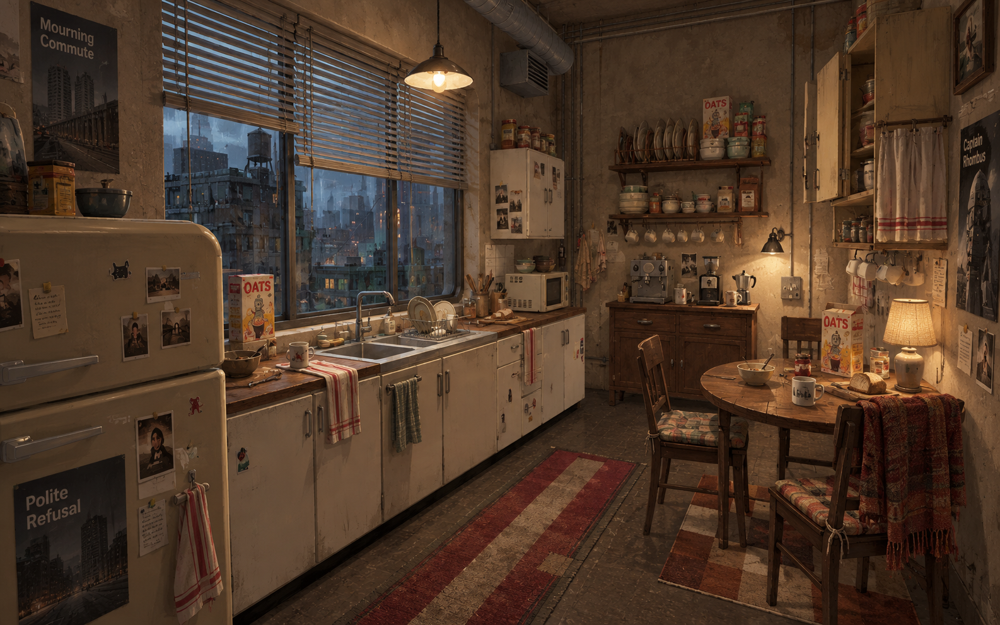
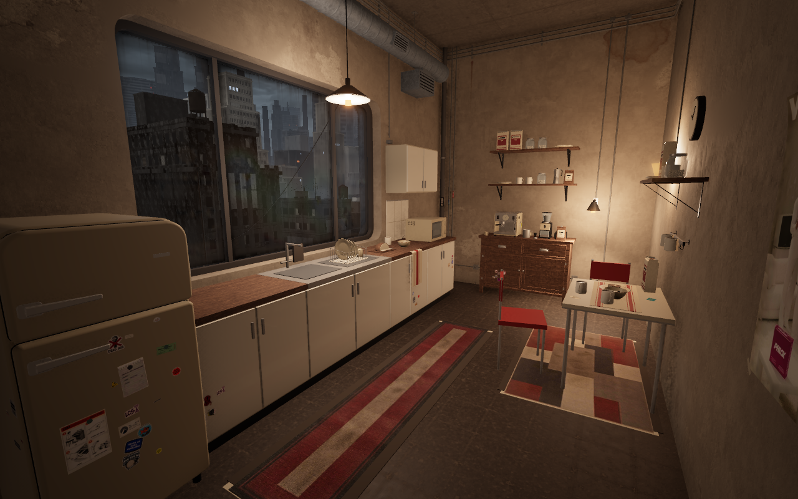
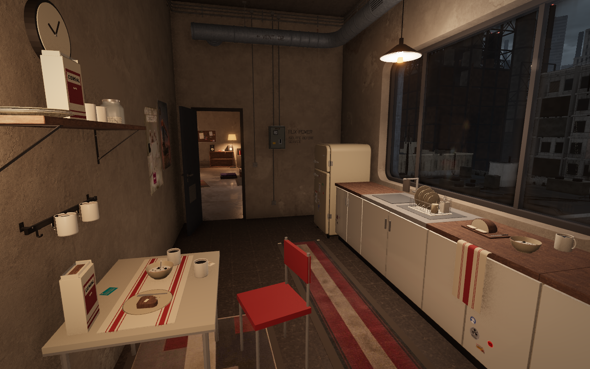

The kitchen: coffee and poster hangout
Vibe collected and repaired this room herself. These concepts add places to settle in, useful rescued storage, illustrated pantry packs and traces of two girls sharing their daily life.
Placement rule for every direction: furnishings find suitable walls and floor space; loose items choose compatible worktops, dining surfaces, shelves and hooks. Changing the room layout must repack them onto the available surfaces. The pictures describe the mood and useful groups, rather than fixed object coordinates.
Matching the approved coffee hangout. The generated reference below remains the target. The actual room now has a varied shelf-stable pantry, illustrated packaging, salvaged cupboards, personal green mugs, plaid towels, a loose knitted throw and warm task lamps. The latest pass gives the coffee cupboard piece-aligned walnut grain, darker inset panels and softer old varnish, alongside the espresso machine's used satin steel housing. The raised task lamps still follow suitable tops automatically. Warm kitchen lamps cast shadows beneath shelves and around the coffee gear. A more layered city outlook opens through the kitchen window. Nearby ordinary roofs are shorter, while the composed city landmarks remain. Taller reused oat tins sit among shorter mugs, jars, packets and books. The rescued cupboards retain soft repaint patches, chipped edges and repairs. The shared coffee press and jars retain clear glass. Four household photographs and two handwritten notes remain on compatible fridge and cupboard faces. The main worktops and overall room contrast are still being compared with the reference.
Only shelf-stable food and drinks: oats, coffee, powdered non-dairy creamer, sugar and long-life cakes. No plants. Loose items choose compatible surfaces and reshuffle after furniture edits. The cloth shares the existing print atlas. Cupboard paint reuses the small shared finish atlas.
Reference and current 3D progress
The room is being judged against this picture. Finished asset counts and the automatic comfort score do not measure the visual match.



The actual room keeps its existing proportions and city. The window now opens to more distant buildings and scattered warm lights. Its rendered light is harder than the generated reference, and the furniture faces remain simpler. The shelves have taller mixed stock, and the cupboard doors show gentle repaint variation. Native pictures at noon, dusk and night have a clear doorway, no waiting surface inventory and no missing prop models.
Medium quality · daylight correction
The same room, camera and noon setting before and after the latest correction. The existing reflected daylight field now reaches the kitchen more clearly. A changed layout that gives this room a direct window light disables the fallback automatically.


No extra lights or textures. The dusk pictures above use high quality; this pair shows the medium-tier daytime correction.
Walnut and steel for the coffee corner
The rescued cupboard now has grain running along its planks, drawers and door panels, with darker insets that make the joinery clearer. The espresso machine keeps its analog controls and gains a used satin steel housing. These are actual before-and-after 3D views; all furniture and loose stock retain their automatic positions.


Updated espresso construction concepts


Inspect the cupboard blockout and final · Inspect the espresso blockout and final
The small finishes share the existing prop atlas. Extra resident texture memory:171KiB on BC4 devices,341KiB with R8. No extra room draw. Main worktops and the whole room's softness and contrast remain open work against the approved image.
Higher lamps over coffee and the seats
The coffee lamp now clears the equipment and finds free space beside the pantry shelves. The table shade hangs above the chair backs. Both derive their mounts from suitable coffee or dining tops when furniture moves, rotates, changes height or is replaced.


Locked lamps stay fixed. No added model, texture, shadow map or room draw call. The broader furniture finishes still differ from the approved concept and remain open work.
Warm lamps ground the kitchen furniture
The kitchen pendant and table lamps now cast shadows beneath the shelves and around the coffee gear while retaining the shades' warm glow. These pictures come from the actual deployed room. Existing shadow lights follow the kitchen while you are inside it.


A layered city beyond the coffee window
The kitchen looks over shorter ordinary roofs toward more distant buildings and scattered warm windows. The outlook follows the actual kitchen opening when it moves, rotates or changes size. All furniture, loose stock and papers retain their automatic positions.


Four ordinary roofs are lower in the current layout. Existing city landmarks and seeded lots stay in place. No new texture, light or draw call. Softer kitchen lighting and furniture surface character remain open work against the approved reference.
Taller, mixed pantry stock
Two reused bulk oat tins break up the low rows. The upper one sits beside the glass coffee jar; the lower one sits among cups and smaller supplies. Books, other plates and sugar supplies remain. These are actual before-and-after pictures of the 3D kitchen.


New prop construction art


Inspect the oat tin, blockout and final model
The tins choose compatible pantry surfaces automatically; six smaller items find free storage around them. Existing label textures, draw calls and texture memory stay unchanged. Softer light and the window outlook remain open work against the approved reference.
Quietly repainted, repaired cupboards
Soft brush and repaint patches give the broad cream faces more character. Their chipped edges, riveted repair and mismatched replacement door remain physical parts of the furniture. These are actual before-and-after pictures of the 3D kitchen.


Every object retains its automatic surface placement. One small shared finish atlas serves the cupboard family. The generated reference remains the target: fuller shelves, softer light and the window outlook still need work.
Clear coffee, reused glass
The pot and pantry jars show their dark contents through clearer glass, with visible empty headspace. These are actual before-and-after pictures of the 3D kitchen. Every object and picture keeps its existing automatic surface placement.


No new texture or room draw call. The room’s other glass keeps its earlier appearance. Broad cupboard finishes, shelf grouping and softer light remain under review against the approved reference.
A shared pot at the coffee table
The new manual press follows genuine front and opposite construction concepts: hollow glass, a stamped steel cradle, an open moulded handle and a raised plunger. It finds free dining space and moves or rehomes after furniture edits. All previous owner placements stay unchanged.
Existing materials; no added texture memory or draw calls. The hollow beaker now shows the dark coffee through clearer glass. Broad cupboard finishes and softer lighting remain open visual work.


New prop construction art


Household memories and coffee notes
Four little snapshots and two handwritten notes make the kitchen feel more personal. Magnets hold the fridge pictures; tape holds the cupboard cards. Their positions follow the furniture and keep vents, hinges and latches clear.


The approved image remains the target. Furniture surface character and softer lighting are still being revised.
Everyday coffee and leftovers
The partly eaten cake has crumbs and its discarded wrapper. The mugs being used contain coffee; the mugs on the wall rail and shelves are hollow and empty. The pitcher is empty equipment for mixing powdered non-dairy creamer. There are no fresh foods or plants.



Automatic kitchen comfort check:12/14. The reference match is being revised visually; this automatic number does not judge clutter density, material character or composition. The smaller detail pictures here record the earlier completed-assets pass.
1 · Borrowed breakfast nook 8.5/10
A shallow rescued bench with hand-sewn seat and back cushions faces the city. Lower shaded light, a padded red chair, mixed wall cupboards and a rumpled cloth make the table somewhere to stay for another coffee.
Strongest for long conversations and looking outside. Keep the bench shallow enough for the aisle and arrange the shelf contents through use.

2 · Coffee and poster hangout 8/10
A reused metal locker becomes a coffee cupboard. Two different padded chairs, an open notebook, music posters, layered stickers and busier shelves give the room the strongest personal identity.
Most musical and social. Seat pads help; softer chair backs would improve comfort during long chats.

3 · Rainy evening pantry 8.5/10
Uneven salvaged cupboards, a cloth-front cubby, a plate rack and a little rounded table make the room feel sheltered and domestic. Padded chairs, a mended blanket and a shaded lamp soften its industrial shell.
Most sheltered, with the most useful storage. Keep the blinds partly raised and resist filling every wall gap.

Approved: direction 2
The owner chose 2, the coffee and poster hangout. The other two pictures remain here as alternatives for comparison. The implementation keeps the room personal, modest and makeshift.
All three include a finished hollow steel sink, manual horizontal blinds, properly illustrated oat packs and naturally used shelf groups. No plants.
Original visual critique and baseline
- Seats: bare hard chairs do little for hours of eating and talking. Give the seats and backs real padding.
- Original fittings: the sink and original cupboards are still blockouts. Finish the basin, rolled edge, drainboard and tap, then give the rescued cupboards different hardware and construction.
- Window: add horizontal Venetian blinds for shelter, leaving a substantial outside view.
- Light: the check counts three warm sources in one height band. A shaded light near table height adds intimacy.
- Ownership: use actual illustrated package art, photographic and illustrated music posters, snapshots, notes and clustered stickers.
- Shelves: vary the heights and orientation; put cups in front of jars, partly hide packs, and leave small gaps. Clear useful surfaces still matter.
- Everyday logic: the stored mugs on the rail need an empty variant; coffee belongs in the cups being used.

